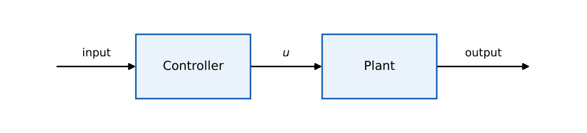
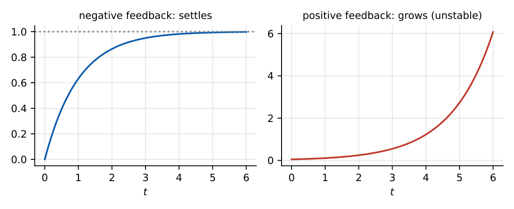
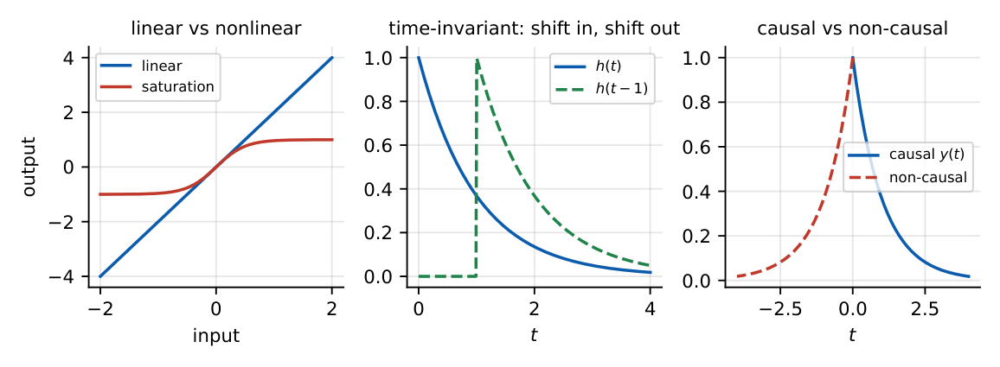
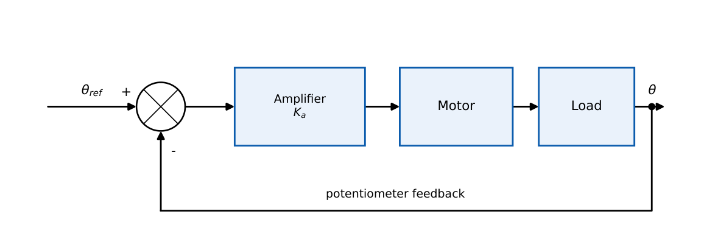

Introduction to Control Systems
Classification of systems (linear, time-invariant, causal, static/dynamic), open vs closed loop, feedback identification. Usually 1-mark conceptual questions.
1.1 Core concept
A control system manipulates an input so that the output of a plant follows a desired reference. Key terms: plant (the process being controlled), controller, sensor, actuator, reference \(r\), output \(c\), error \(e=r-b\), disturbance \(d\).
1.1.1 Open-loop and closed-loop systems


| Open loop | Closed loop | |
|---|---|---|
| Feedback | none | present |
| Accuracy | depends on calibration | high (feedback corrects errors) |
| Sensitivity to parameter change | high | low |
| Disturbance rejection | poor | good |
| Stability problem | rarely | possible (feedback can destabilise) |
| Cost/complexity | low | higher |
| Example | toaster, traffic timer | thermostat, cruise control |
1.1.2 Positive and negative feedback
Negative feedback subtracts the fed-back signal (\(e=r-b\)); it reduces gain and sensitivity and widens bandwidth. Positive feedback adds it; it increases gain and can cause instability or oscillation (used in oscillators and Schmitt triggers).

1.1.3 Manual vs automatic; continuous vs discrete
Manual control needs a human in the loop; automatic control uses a controller. Continuous-time systems are described by differential equations and Laplace transforms; discrete-time (sampled-data) systems by difference equations and \(z\)-transforms.
1.2 Classification of systems
| Property | Test / meaning |
|---|---|
| Linear | superposition: \(T[ax_1+bx_2]=aT[x_1]+bT[x_2]\) (additivity and homogeneity) |
| Time-invariant | delayed input gives identically delayed output; coefficients constant |
| Causal | output at \(t\) depends only on inputs at \(\le t\); \(h(t)=0\) for \(t<0\) |
| Static (memoryless) | output depends only on present input (no derivative/integral) |
| Deterministic | no randomness in the model |
| SISO / MIMO | one or many inputs and outputs |
| Lumped / distributed | ordinary vs partial differential equations |

(a) \(y=2x+3\): not linear (offset violates homogeneity), static. (b) \(\dot y+ty=x\): linear, time-varying. (c) \(y(t)=x(t)^2\): nonlinear, static. (d) \(y(t)=x(2t)\): linear, time-varying, non-causal for \(t>0\) (needs a future value).
1.3 Engineering examples

- Speed control: tachogenerator feeds back speed; error drives the armature voltage.
- Temperature control: thermostat compares set point with sensed temperature and switches the heater.
- Position control: servo motor with encoder/potentiometer as sensor.
- Level control: float sensor and valve actuator keep tank level fixed.
Feedback identification: if the output (or a function of it) is compared with the input, the loop is closed. Look for a line returning from the output to a summing point.
A linear equation with an offset (\(y=mx+c\), \(c\neq0\)) is not a linear system. Systems with time-varying coefficients (\(ty\)) are linear but not time-invariant.
Q1. Which system is closed loop? (A) automatic washing machine timer (B) room air conditioner with thermostat (C) traffic signal on a fixed timer (D) electric toaster.
Q2. \(y(t)=x(t)+2\) is (A) linear, TI (B) nonlinear, TI (C) linear, TV (D) nonlinear, TV.
Q3. Negative feedback generally (A) increases gain (B) decreases sensitivity to parameter variations (C) always destabilises (D) narrows the bandwidth.
Answers: Q1 (B). Q2 (B): offset breaks superposition; coefficients are constant. Q3 (B).
Q4. For \(y(t)=\int_{-\infty}^{t}x(\tau)d\tau\) which is true? (A) nonlinear (B) static (C) linear, causal, dynamic (D) non-causal.
Q5. \(y(t)=x(t)\cos(\omega_ct)\) is (A) linear, TI (B) linear, TV (C) nonlinear, TI (D) nonlinear, TV.
Answers: Q4 (C). Q5 (B): modulator; a shifted input does not give a shifted output.
Q6. A system is described by \(y(t)=3x(t-2)\). Its impulse response is \(h(t)=k\,\delta(t-\tau)\); the value of \(k+\tau\) is .
Answers: Q6: \(k=3\), \(\tau=2\), so \(5\).
Q7. Which are linear? (A) \(y=x^2\) (B) \(y=\dot x\) (C) \(y=tx\) (D) \(y=x+1\).
Answers: Q7: (B), (C).
A system with output \(y(t)=x(t)\,u(t)\) (input gated on at \(t=0\)) is linear, time-varying and causal: shifting \(x\) moves it relative to the fixed gate.
T1. State two advantages and one disadvantage of closed-loop control.
T2. Is \(y(t)=\sin(x(t))\) linear? Is \(y(t)=x(t/2)\) time-invariant?
Answers: T1: reduced sensitivity, disturbance rejection; risk of instability. T2: nonlinear; not time-invariant (time scaling).
- Closed loop \(=\) feedback; better accuracy, lower sensitivity, may become unstable.
- Linear \(=\) superposition; TI \(=\) delayed in, delayed out; causal \(=\) \(h(t)=0,\ t<0\).
- Offset (\(y=mx+c\)) \(\Rightarrow\) nonlinear. Time-varying coefficient \(\Rightarrow\) not TI. Scaling/modulation \(\Rightarrow\) TV.
- Negative feedback: lower gain, wider bandwidth, less sensitivity.